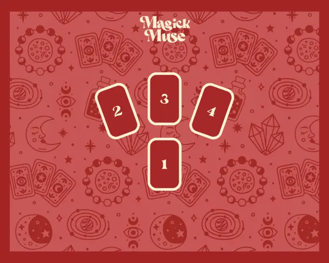

Card Grimoire
Midwinter Solstice Tarot Spread
Spread Type
Question Style

Card Details
Card 1: Signifier - represents you, deep within your winter cave
Card 2: Contemplation - how winter's time of reflection, evaluation, and contemplation is affecting you; what you're thinking about
Card 3: Celebration and action - having reflected on the past year, how will you move forward; what's next
Card 4: Light, realization, and success - as the sun reappears and light returns to the world, where will it find you
Variations: You may pull additional "more information" cards at any time. If there is a card you want to know more about, pull a new card and place it next to or above the original one. Examine the second card to see what it tells you about the first.
Description
A four-card spread for Winter Solstice reflection. Place a signifier card with three cards in an arc above it. This spread helps you contemplate the past year, decide how to move forward, and envision where you'll be when the light returns.
Correspondences3
Number of Cards1
Symbols1